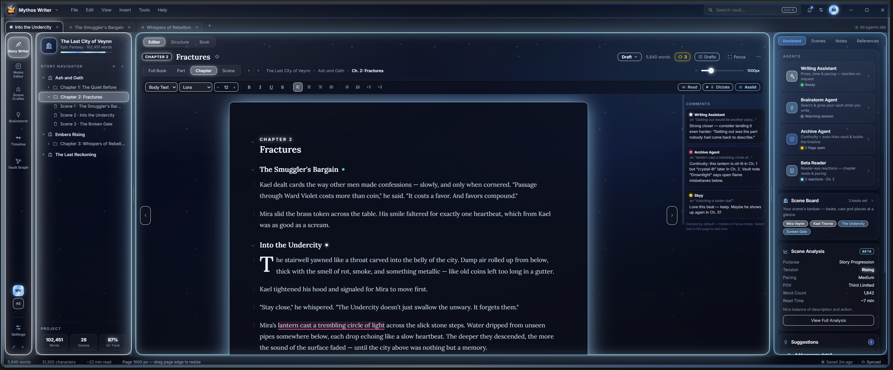
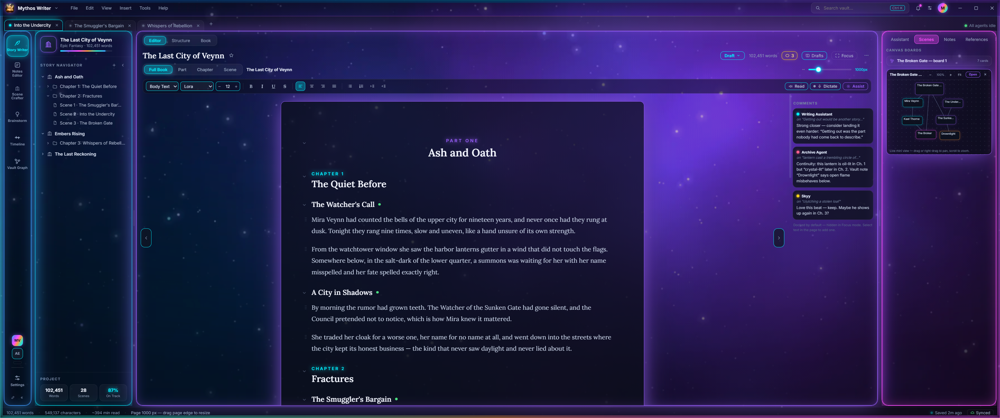
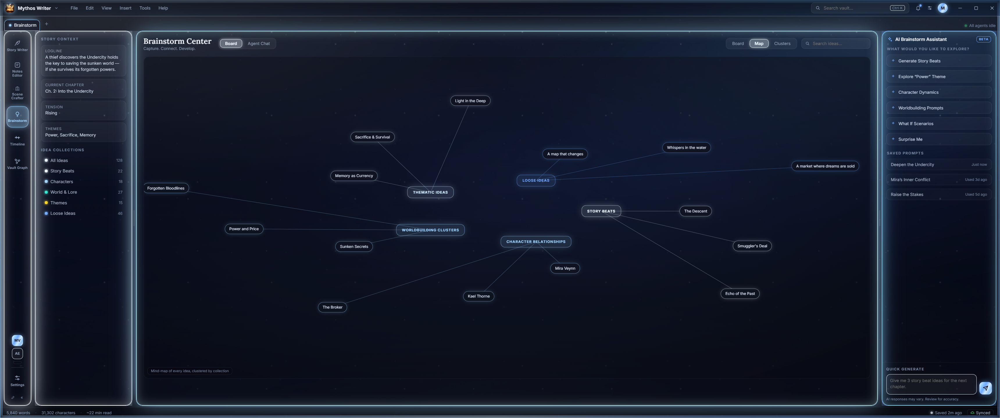
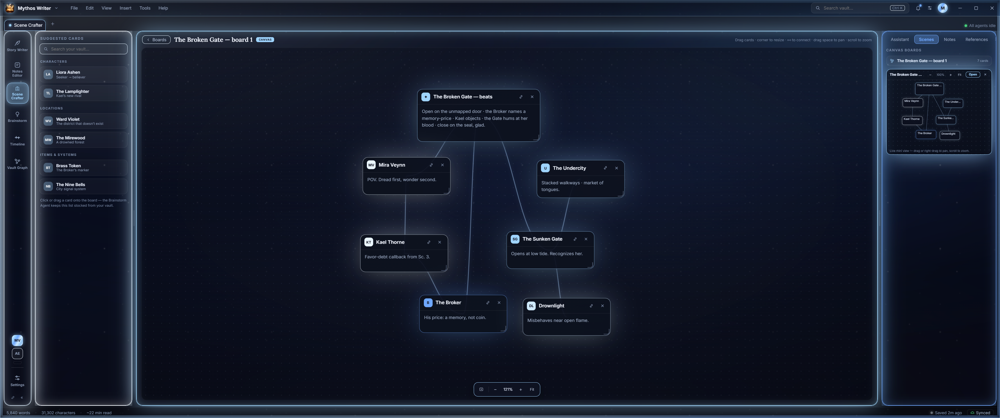
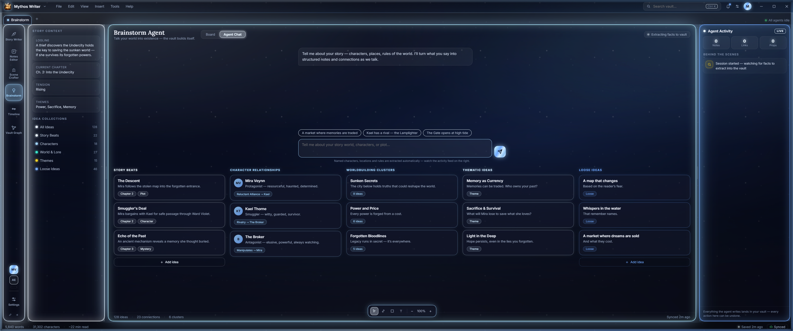
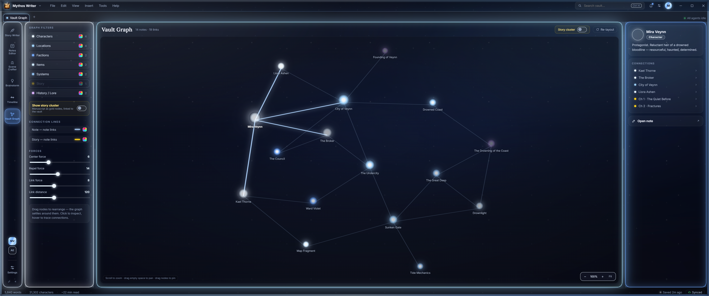
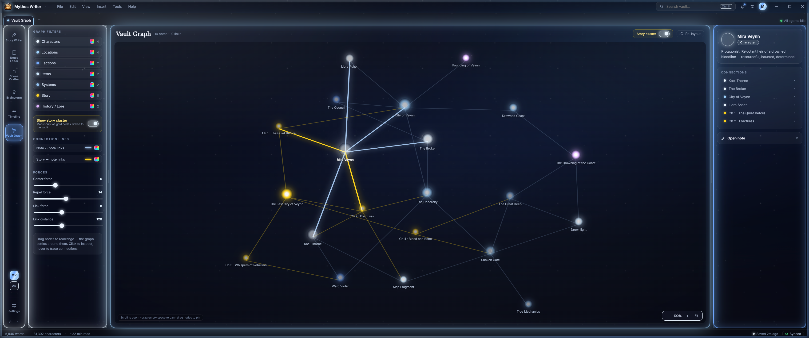
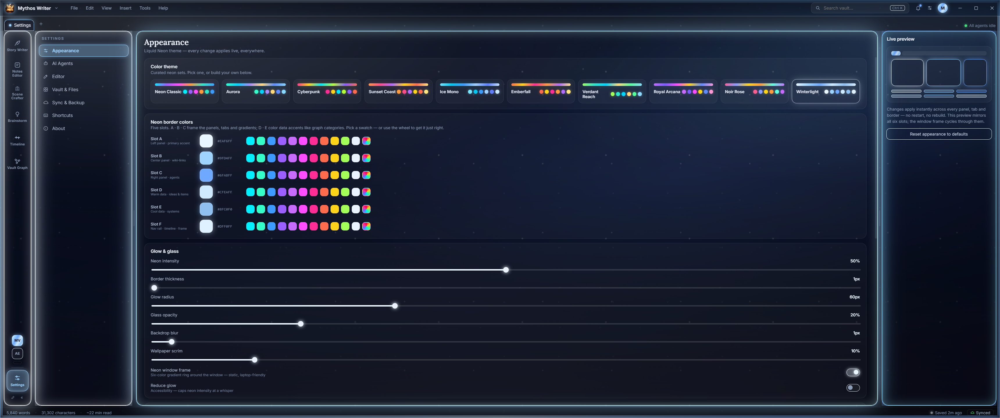
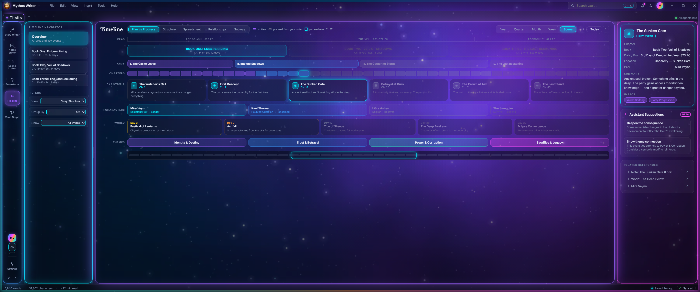
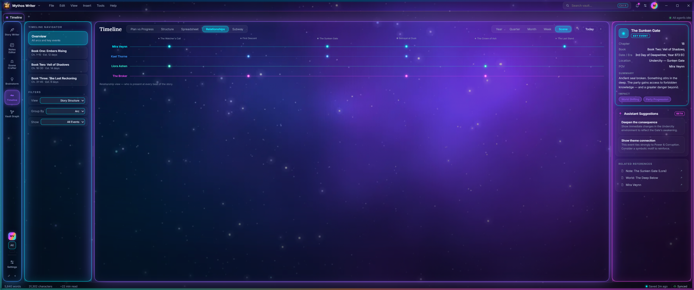

Free · Desktop · Windows & Mac
Mythos Writer is the desktop app for writers who need more than a blank page — a living vault for your world, AI agents that read your story, visual scene planning, and a constellation graph that shows how everything connects.
One app. Every layer of your story.


Why Mythos Writer
Most writing apps give you a text editor. Mythos Writer gives you a command centre: agents that read your draft in real time, a vault of world notes that stays in sync, and tools that turn your ideas into a story you can actually finish.
Features
Six tightly integrated tools — writer, vault, scene crafter, brainstorm, timeline, and graph — each powerful alone, transformative together.
Story Writer
Write in a distraction-free canvas with per-scene focus mode, multi-draft versioning, and a Story Navigator that tracks every chapter, part, and scene. Your agents watch as you type — leaving continuity flags, revision suggestions, and reader-eye reactions directly in the margin.
AI Agents
Each agent is always-on and aware of your entire manuscript and vault. They don't interrupt — they comment in the sidebar, flag issues inline, and respond when you ask. No copy-pasting into a chat window.

All four agents active simultaneously — watching every scene you write.
Notes Vault
Add locations, characters, factions, history, and rules to a structured Notes Vault. Every entry is tagged, cross-linked, and instantly searchable — and the Archive Agent reads it all to keep your manuscript consistent.
Scene Crafter
Drag characters, locations, and beats onto an infinite canvas. Connect them, annotate them, and let the Brainstorm Agent stock the sidebar with relevant vault entries as you plan. When you're ready, the scenes flow straight into the Story Writer.

Visual beat planning for The Broken Gate — seven connected story elements mapped before a word is written.
Brainstorm
Describe your story, characters, or world in the Brainstorm Agent chat. It extracts facts in real time, organises them into Story Beats, Character Relationships, Worldbuilding Clusters, Thematic Ideas, and Loose Ideas — and saves everything directly to your vault.

128 ideas extracted from a single brainstorm conversation — every one saved to the vault automatically.
Vault Graph
The Vault Graph renders every note in your vault as a star in a physics-driven constellation, with connection lines showing how characters, locations, factions, and manuscript scenes interrelate. Click any node to inspect its connections. Enable Story Cluster mode to overlay your manuscript directly onto the world map.

14 notes, 19 links — your world's hidden structure made visible in one view.
Timeline & Structure
The Timeline view surfaces every chapter and scene chronologically so you can spot pacing gaps, overlapping events, and time-skip inconsistencies before a reader does. The Structure tab gives you a chapter-by-chapter outline with live word counts, scene counts, and on-track percentages.




Our belief
Most writing apps treat your story like a text file. But a novel is a system — characters who contradict each other, worlds with rules that need to hold, scenes that depend on things you wrote three chapters ago. Mythos Writer was built for that complexity.
We believe the best tool for a story isn't a word processor. It's a workspace where your world, your plan, your draft, and your agents all share the same context — and every one of them helps you write something you couldn't have written alone. That's what we built.
No subscription. No lock-in. Your files stay on your machine. Download it, write your world, see what happens.
Free forever. Start writing today.